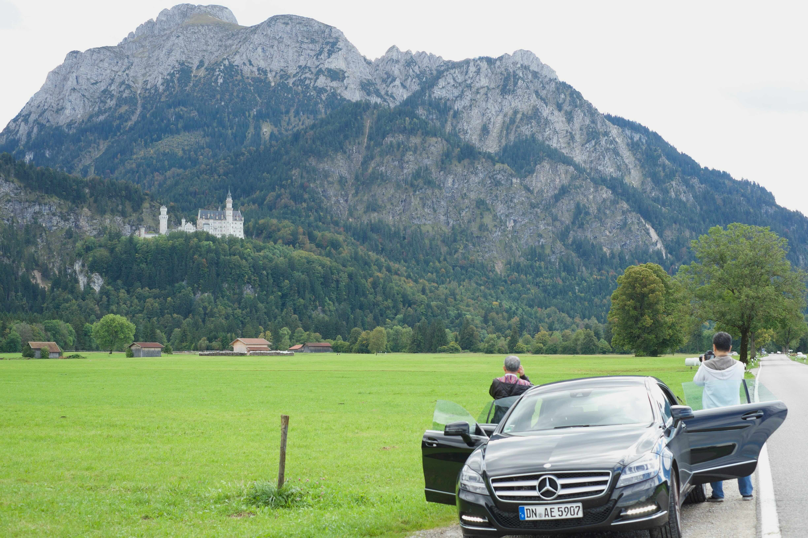

遠くに見えるノイシュヴァンシュタイン城
先日『世界遺産』を観ていて知った。ノイシュヴァンシュタイン城が、2025年にようやく世界遺産に。

ライカやドローンを片手に、世界各地で切り取った瞬間。街角の何気ない風景から、雄大な自然まで、旅先で出会った光景を写真と動画で記録しています。
先日『世界遺産』を観ていて知った。ノイシュヴァンシュタイン城が、2025年にようやく世界遺産に。
ずっと夢見ていたモン・サン＝ミッシェルの空撮

今はもうなくなってしまったドイツ・ケルンのカメラショー Photokina に行って、 みんなでフォトウォークしながら撮った思い出の一枚。

広州から５３時間列車に乗ってラサ駅へ、到着前からほぼ高山病。 ポタラ宮についたときには意識が朦朧としていました。
妻と訪れたカッパドキアのホテルから眺めた朝の風景。宿泊した洞窟ホテルのベランダからドローンを飛ばして撮影しました。
香港の隠れた絶景スポット、馬草壟。驚くことにビル群が中国深セン、養殖池が並ぶのが香港。この風景もあと数年で開発されてみられなくなりそう。
サンマルコ広場から見たヴェネツィアの夜景。水面に映る光が幻想的な雰囲気を演出していました。

香港の高層ビル群。東西が融合した独特の都市景観は、何度見ても飽きることがありません。

妻と一緒に訪れたカッパドキア。自然が作り出した不思議な岩の造形美に圧倒されました。

ヨーロッパとアジアの境界、イスタンブール。ボスポラス海峡をクルーズしながら撮った一枚、ガラタ塔に登れなかったことが悔やまれる